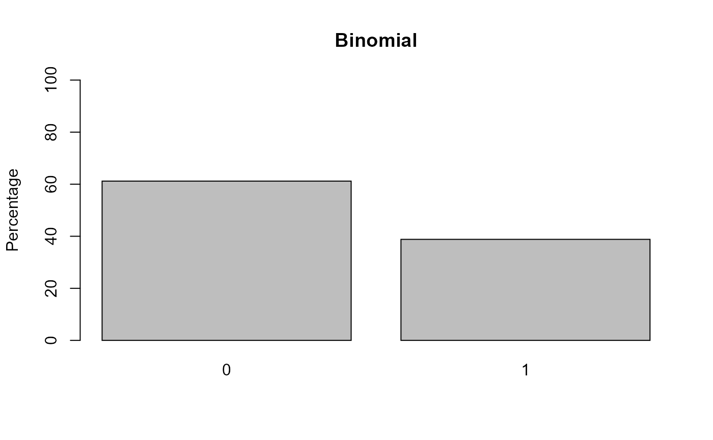
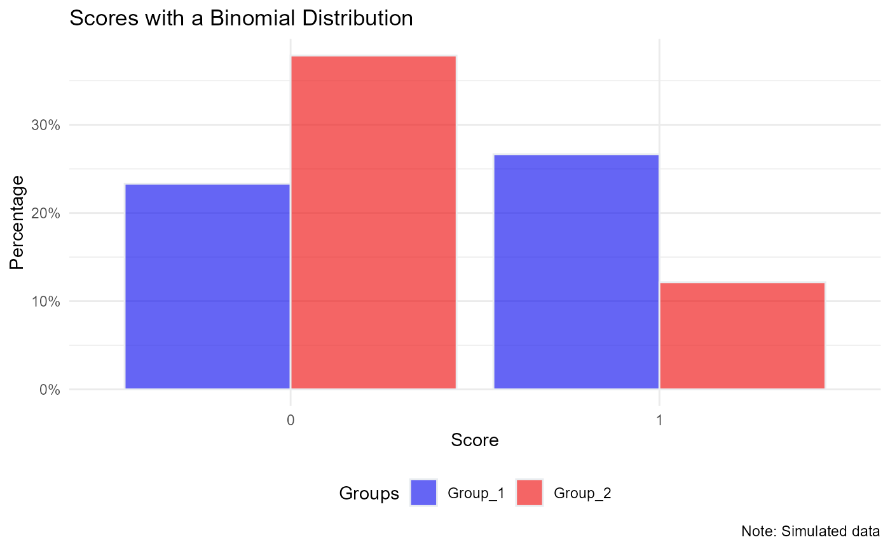

a07_2_Relative_Risk_pt2.RmdNow we extend the OR to RR to include covariates. We can do this with categorical covariates or continuous covariates. There is an R packge with a function (epitools::probratio) that will help you do this, but I want to do it by hand so we all understand what is actually happening.
Also note that I recently had to compute the adjusted RR for an ordinal regression model. I couldn’t use an R library, I had to do it by hand. Once you understand this code below, you’ll be able to extend it to ordinal context.
library(SPR)
library(MASS)
N = 1e5 #this should be divisible by however many groups you use!
number.groups <- 2
number.timepoints <- 1
set.seed(9122021)
dat <- data.frame('USUBJID' = rep(paste0('Subject_', formatC(1:N, width = 4, flag = '0')), length.out= N*number.timepoints), 'Group' = rep(paste0('Group_', 1:number.groups), length.out = N*number.timepoints), stringsAsFactors=F)
# Generate a Covariate
# Option 1: Continuous, unbalanced:
# dat$Covariate <- rlnorm(n = N, mean = dat$Group == 'Group_2', sd = 0.25)
# range(dat$Covariate)
# aggregate(Covariate ~ Group, FUN = function(x) round(mean(x, na.rm = T),2), dat = dat, na.action = na.pass)
# Covariate is unbalanced across groups, could serve as a confound
# Option 2: Categorical, Balanced:
# dat$Z <- sample(x = c(0,1), size = N, replace = T, prob = c(0.5, 0.5))
# Option 3: Categorical, Unbalanced:
dat$Z <- rbinom(n = N, size = 1, prob = 0.4 + 0.4*(dat$Group == 'Group_1'))
table(dat$Z)
#>
#> 0 1
#> 40063 59937
xtabs(~ Group + Z, data = dat)
#> Z
#> Group 0 1
#> Group_1 10033 39967
#> Group_2 30030 19970
# Create Beta parameters for these design matrix:
X <- model.matrix( ~ Group + Z , data = dat)
# Create Beta
Beta <- matrix(0, nrow = ncol(X), dimnames=list(colnames(X), 'param'))
Beta[] <- c(-0.25, -1, -0.5)
# Matrix multiply:
XB <- X %*% Beta
p <- exp(XB) # prevalence - log link
round(range(p), 2)
#> [1] 0.17 0.78
#p <- exp(XB)/(1 + exp(XB)) - this is the logistic link
# Dichotomize
dat$Y_binom <- as.vector(1*(p > runif(n = N)))
# Plot
aggregate(Y_binom ~ Group, FUN = function(x) round(mean(x, na.rm = T),2), dat = dat, na.action = na.pass)
#> Group Y_binom
#> 1 Group_1 0.53
#> 2 Group_2 0.24
barplot(100*table(dat$Y_binom )/sum(table(dat$Y_binom )), ylim = c(0, 100), ylab = 'Percentage', col = 'grey', main = 'Binomial')
library(ggplot2)
ggplot(data = dat, aes(x= as.factor(Y_binom), fill = Group)) +
geom_bar(aes(y = (..count..)/sum(..count..)), color="#e9ecef", alpha=0.6, position="dodge", stat="count") +
scale_y_continuous(labels=scales::percent_format(accuracy = 1)) +
scale_fill_manual(name = 'Groups', values=c("blue2", "red2")) +
theme_minimal() +
theme(legend.position = 'bottom') +
labs(x = 'Score', y = 'Percentage',
title = 'Scores with a Binomial Distribution',
caption = 'Note: Simulated data')
# Observed Data:
xtabs(~ Y_binom + Group, data = dat)
#> Group
#> Y_binom Group_1 Group_2
#> 0 23328 37858
#> 1 26672 12142
ptab <- prop.table(xtabs(~ Y_binom + Group, data = dat), 2)
#--------------------------------
# Logistic Regression:
mod.lr <- glm(Y_binom ~ Group + Z, data = dat,
family = binomial(link ='logit'))Now we have the odds ratio from the model, we can compute the relative risk using the formula we reviewed: OR/((1-P0) + (P0 * OR)). However, this formula requires the baseline prevalence.
We want the probability of Y given Group membership, averaged over covariates. This is computing the RR marginalizing over the covariates. So this is the RR specific to the sample characteristics. You’ve selected a base rate specific to the sample.
p1i <- predict(mod.lr, type = 'response',
newdata = data.frame('Group' = 'Group_2',
'Z' = dat$Z))
p0i <- predict(mod.lr, type = 'response',
newdata = data.frame('Group' = 'Group_1',
'Z' = dat$Z))
mean(p1i)/mean(p0i)
#> [1] 0.3634829
# This aligns with the generating value:
exp(Beta['GroupGroup_2', ])
#> [1] 0.3678794https://escholarship.org/content/qt3ng2r0sm/qt3ng2r0sm.pdf
“Standardized measures are constructed by taking averages over C before comparisons (e.g., ratios or differences) across X…Recalling Jensen’s inequality (an average of a nonlinear function does not equal the function applied to the averages), it should not be surprising to find divergences between collapsibility conditions depending on the step at which averaging is done (Samuels, 1981, sec. 3).”
epitools
library(epitools)
#> Warning: package 'epitools' was built under R version 4.1.1
# Function is 'probratio()'
# See documentation - marginalizes over observed covariates
pr <- epitools::probratio(mod.lr,
method='delta',
scale='linear')
pr
#> Relative risk Std. Error Z-value p-value Lower 2.5% CI
#> GroupGroup_2 0.3634829 0.003477571 183.03495 0 0.3566670
#> Z 0.6197400 0.004671086 81.40721 0 0.6105848
#> Upper 97.5% CI
#> GroupGroup_2 0.3702988
#> Z 0.6288951Let’s put it all together and see if we can understand
# Generating parameter (true value):
exp(Beta['GroupGroup_2', ])
#> [1] 0.3678794
# Observed RR (just using observed proportions):
ptab # Group 1 & Group 2
#> Group
#> Y_binom Group_1 Group_2
#> 0 0.46656 0.75716
#> 1 0.53344 0.24284
ptab['1', 'Group_2']/ptab['1', 'Group_1']
#> [1] 0.455234
# RR from unadjusted log-binomial model:
exp(coef(mod)['GroupGroup_2'])
#> GroupGroup_2
#> 0.455234
# RR from Adjusted log-binomial model
exp(coef(mod2)['GroupGroup_2'])
#> GroupGroup_2
#> 0.3699474
# RR from adjusted Logistic Regression - Marginalized over covariates
mean(p1i)/mean(p0i)
#> [1] 0.3634829
# same, but letting `epitools::probratio()` do all the work:
pr
#> Relative risk Std. Error Z-value p-value Lower 2.5% CI
#> GroupGroup_2 0.3634829 0.003477571 183.03495 0 0.3566670
#> Z 0.6197400 0.004671086 81.40721 0 0.6105848
#> Upper 97.5% CI
#> GroupGroup_2 0.3702988
#> Z 0.6288951